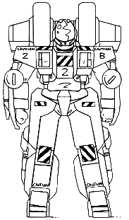
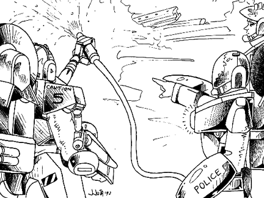
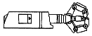
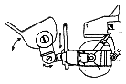
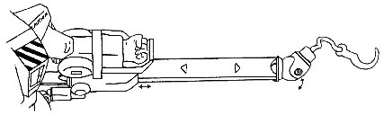

The following material is from
THE THIRD INVID
WAR, a fan supplement by
Dave Deitrich and
Chris
Meadows. Please feel free to use, copy, and distribute
it as you see fit. All we ask is that you give proper credit to us and do not
claim that it is your own work. Comments and suggestions are welcome.
THE VR-112 SAMSON
BACKGROUND

The VR-112 Samson was the first cyclone designed with a non-combat role in
mind. During the Cyclone Redesign Project of 2039, the REF engineering team
reasoned that a small man-sized mecha such as the cyclone could have many
logistics and utilitarian uses aside from combat, such as moving supplies,
arming veritechs and destroids with heavy ordinance, and helping in combat
engineering tasks such as building bridges or planting explosives. They
therefore designed the Samson to be a "light" engineering vehicle for use by
REF support forces and combat engineers. VR-112 cyclones are most commonly
found in REF starships or REF bases helping with the general maintenance and
repair of other mecha. They are also sometimes used in the field by REF
Combat Engineers to help perform their tasks.
The VR-112 Samson is the most massive cyclone designed to date, mostly due to
the extensive hydraulic systems that give the battlesuit its great strength.
While the Samson is immensely strong and well armored (due to its bulk), it is
also the slowest of all cyclones. In cyclone mode, the VR-112 is very
angular, and so large that it resembles a piece of machinery more than it does
a motorcycle. In battloid mode the massive exoskeleton arms have led to the
model being nicknamed "Ahnold" by several different construction platoons.
The VR-112 is painted gray with yellow warning markings, and is often battered
and scraped. Since the VR-112 rarely goes into combat, most pilots wear the
older CVR-3 body armor.
Following the end of the Third Invid War most of the design team that worked
on the VR-112 retired from the REF and started their own construction mecha
company, ironically named Samson Industries and based on Tirol.
Although the company specializes in cheaper powered suits and
non-transformable mecha, they have produced two successor cyclones to the
VR-112 Samson (the VR-119/SCE-02 Samson II and the SCE-06
Hercules), both of which are sold commercially to the RGF and civilian
construction companies. The original VR-112 Samson is still very common on
Earth, as it was imported in great number during the Era of Rebuilding (2048-2055).
NOTE: By 2037 the REF Command had repealed the old RDF rules forbidding
mecha engineers from receiving mecha pilot training. It is now standard
practice for all REF Bio-Maintenance Engineers and Combat Engineers to receive
pilot training on Cyclones with emphasis on the VR-112 Samson. Mecha combat
skill is still limited to BASIC level, however; one cannot learn to be an ace
pilot and crack mechanic in the academy at the same time.
SCHEMATICS
 Click on the icon to the left to view some pictures from the REF Cyclone
maintenance guide, document REF-5532-129-1896.
Click on the icon to the left to view some pictures from the REF Cyclone
maintenance guide, document REF-5532-129-1896.
RPG STATS
Model: VR-112 Samson
Class: 2nd Generation M.O.S.P.E.A.D.A. Engineering Vehicle
Crew: One
M.D.C. BY LOCATION:
Motorcycle Mode Battlesuit Mode
---------------------------- ----------------------------
Headlight 5 Tires (2, rear) 5
Front Tire 5 Thrusters (rear) 25
Rear Tire 5 Forearm Shields (2) 50
Storage Box (2) 4 each Leg Shields (2) 150
Thrusters (rear) 25 Head 50
(1) Main Body 350 (1) Main Body 350
M.D.C. OF BODY ARMOR:
(2) CVR-4C (Heavy Combat Armor) 90
(2) CVR-4 (Standard Military Armor) 70
(2) CVR-3 (Standard Military Armor, Support Personnel) 50
Notes:
- Depleting the M.D.C. of the Main Body will shut the mecha down
completely.
- Depleting the M.D.C. of the body armor will destroy it and very likely
kill the wearer (10% chance of survival).
The Second Generation Cyclones are equipped with laser resistant
ceramic armor, so laser weapons do only HALF damage. This does NOT
include any other energy attacks such as particle beams or ion blasts,
nor does it help against explosives.
Military versions of the VR-112 Samson are compatible with CVR-4C Heavy Combat Armor.
SPECIFICATIONS
- Motorcycle Mode:
- Maximum Speed: 80 mph (128 kmph)
- Cruising Speed: 55 mph (88 kmph)
- Turbo Boost Fwd: 30 ft (9 m) horizontal
- Turbo Boost Up: 10 ft (3 m) vertical
- Battloid Mode:
- Running: 30 mph (48 kmph)
- Flying: 100 mph (160 kmph)
- Leaping: 30 ft (9 m)
- Thruster Leap: 50 ft (15 m)
- Height:
- Battloid: 7.6 ft (2.3 m)
- Motorcycle: 3.8 ft (1.1 m)
- Width:
- Battloid: 4.0 ft (1.2 m)
- Motorcycle: 2.5 ft (0.8 m)
- Length:
- Battloid: 4.0 ft (1.2 m)
- Motorcycle: 6.0 ft (1.8 m)
Weight:450 lbs (203 kg)
- Cargo:
- The VR-112 has a variety of holding pouches and connectors in addition to
detachable saddlebags that are used for holding construction materials and
equipment. The saddlebags are 18 inches tall by 20 inches wide by 18 inches
deep. A passenger can also ride seated behind the driver, provided large
objects such as girders or panels are not being carried. The enormously
strong VR-112 can hold up to 1500 lbs (675 kg) of material when properly
secured. Reduce maximum speed by 20% for every additional 100 lbs (44 kg)
over the limit and add -1 to dodge.
Unlike its predecessors, the storage boxes of the new cyclones do NOT drop off
when they convert to battloid mode. Instead, the boxes are shifted to the
lower back, just below the thruster packs and covering the butt of the pilot.
The passenger, however, isn't so lucky...
Main Engine: FF-650 Fusion/Protoculture Engines (2)
- Range:
- 4 protoculture cells will power the VR-112 for approximately 12 months
before needing refueling. The backup system can operate on 2 protoculture
cells for 6 months at no penalty. Constant flying will drain the protoculture
cells twice as quickly for all models. As a final backup, the cyclone can run
on fusion power alone for up to 200 miles on a full tank of fuel, but maximum
speed is reduced 15% and constant flying is impossible. The fusion engines
runs off hydrogen, so any hydrogen-rich liquid (like water or ammonia) can be
used for fuel. Extra gas from the fusion engines are released through an
exhaust port.
- Color Scheme:
- Standard VR-112 Samson cyclones are painted gray with yellow stripes and
trim, similar to modern construction equipment. However, Samsons assigned to
combat units are usually colored based on where they are stationed; desert
Samsons are usually painted in a tan camouflage, arctic Samsons are painted a
flat white, etc. But since the Samsons assigned to the Icarus Mission were
not intended for combat duty, most of them retained their gray and yellow
color schemes. Unlike the military Cyclones, Samsons are not streamlined in
colors corresponding to the ranks of their pilots.

VR-112 Samson (left) and VR-122 Protector (right)
fighting a fire aboard the REF starship ICARUS.
WEAPON SYSTEMS
- WELDING LASER. The VR-112 comes standardly equipped with a welding
laser on the right arm shield. While not intended to be used as a weapon,
it can do damage on higher settings. This welding laser is built into
the right arm shield and cannot be exchanged for another arm weapon!
- Primary Purpose: Construction
- Mega-Damage Settings: 1D4, 1D6, and 2D4 M.D. (Maximum Setting)
- S.D.C. Damage Settings: 1D6, 3D6, 6D6, 1D6x10 S.D.C.
- Rate of Fire: Standard.
- Range: 5 ft (1.5 m).
- Payload: The welding laser draws power directly from the
on-board fusion reactors, so it is effectively unlimited as long as it
remains attached to the cyclone. The laser is useless if detached.
- SPECIAL ADDITIONS. The left arm shield of the VR-112 Samson can be
equipped with a variety of tools for special jobs, such as salvage,
demolition, sandblasting, etc. These tools are designed specifically for
the VR-112 Samson and cannot be used with other cyclone designs. Some of
the tools (and this is by no means a complete list) include:
-
Extension Arm with Robotic Fingers for delicate work in hard-to-reach
places. (Strength of arm: 3 M.D.C.)
- Grappling hook with 200 ft of high-tension wire. (Strength of Wire: 1
M.D.C. per 10 feet)
- High-power Air Gun that can be attached to containers. Can be used to
shoot water, sand, paint, etc. (Damage: 2D6, 4D6, or 1D6x10 S.D.C.)

- Powerful Hydraulic Claw for securely carrying heavy objects. Can easily
hold up to 2000 pounds of pressure (...which is actually more than the
cyclone itself can handle). Does 2D6 M.D. CONTINUOUSLY to anything it
grabs!

- Mechanical scoop/cargo lifter. Can only be used in motorcycle mode.
- Extendable crane with 300 feet of cable. Motor can lift up to 1000 lbs
(450 kg), but the Samson's hydraulic arm must be braced if lifting more
than 500 lbs (225 kg). Cable strength is 2 M.D.C. per 10 feet.

Gamemasters, feel free to come up with your own additions!
- MODULAR WEAPON SYSTEMS. The left arm shield can also accept any
other GR-series weapon pod, both from the newer combat cyclone models and
the older ones. Combat pods are usually mounted only when the mecha is
operating in battlefields or other "hot" zones. Click HERE for a complete listing of cyclone weapon
modules. The VR-112 is not equipped with a combat computer, so any
bonuses for certain weapon systems do NOT apply when being used on
the Samson.
- Hand-to-Hand Combat. Punch does 2D6 M.D. Kick does 2D6 M.D. (The
VR-112 Samson has an equivalent strength of PS 150!) Leap Kick
does 3D6 M.D. Body Flip or Body Block does 2D6 M.D.
- Any type of hand-held weapon can be fired by the pilot while in
cyclone armor, including the new Gallant
1000 Multi-Weapon System.
SENSORS AND EQUIPMENT FOR THE VR-112 SAMSON (MILITARY VERSION)
- LASER-RESISTANT CERAMIC COATING: 1/2 damage from laser attacks.
- SHORT-RANGE RADAR WITH HEADS-UP DISPLAY: Range: 1 mile. Can
identify and track up to 10 different targets. (This system was added
as an afterthought. Remember, the Samson was not intended for direct
combat.)
- RADIO COMMUNICATIONS: Boosts standard radio in CVR-series armors
to 10 mile (16 km) range.
- MISCELLANEOUS INDICATORS: Altitude, Speed, Power status, Time,
Date, Direction, etc. All controlled by on-board computer.
- HARD POINTS: The Samson Cyclone has several places for the
attachment of heavy construction equipment and loads of material.
- ADAPTABILITY: The VR-112 can be modified to operate in other
environments such as underwater or in space. These modifications
usually consist of an extra oxygen supply (24 hours) and special jets
for maneuvering in different environments, and are available for special
assignments. (These modifications are generally not
available on Earth during the Third Invid War.)
- NOTE: the VR-112 Samson is NOT equipped with a Targeting Computer!